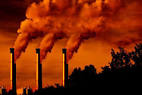
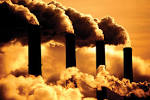
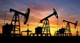

| INTRODUCTION |
| Introduction | OUR WANTS | E-WASTE | AUTOMOBILES |
This historical period brought a lot of upheaval. It caused mass migration from the countryside into the cities. There was a massive change in the job market. Almost every aspect of daily life was changed forever. But there was one change that the people back then could not have foreseen –the impact on the environment.
Svante Arrhenius was a Swedish scientist who first wrote about the idea of the “greenhouse effect” in 1896.
He suggested that the burning of fossil fuels would create additional carbon dioxide in the Earth’s atmosphere, which would, in turn, raise the temperature of the planet.
However, it was not until the 1950s that the idea received more attention from the scientific community.
Of course, the 1950s was also the peak of the post-war economic boom.
This period brought a great increase in the use of modern conveniences.
Cars became more popular. Travelling by plane started to become more affordable.
In the home, electricity consumption dramatically increased due to televisions and refrigerators, amongst other things.
Despite a couple of major recessions, energy crises and other stumbling blocks, standards of living have continued to increase across the developed world, ever since.
In the 1990s, global warming first began to become a political issue and something that captured the imagination of the general public.
However, despite this greater awareness, our modern lifestyles continued to develop at a rapid pace.
In recent years there are now two distinct stages of human development that are having the biggest impact on the environment.
In the developed world there is a near universal agreement that not only are greenhouse gasses bad, but there are many other ways our lifestyle choices are impacting the environment.
Recycling has become commonplace, modern vehicles are more fuel efficient as they produce less damaging exhaust fumes and almost all electrical appliances are infinitely more energy efficient than they were a decade ago.
If you’re interested in joining the revolution and reducing your carbon footprint, there is an abundance of different ways that you can start helping our environment at home.
In fact, it’s almost become trendy in many areas to pursue an environmentally friendly lifestyle. However, that’s not the whole story.
Over the past 50 years, there has been a rapid pace of development across South America and Asia. People in many countries have gone from riding bicycles to work to owning the latest Smartphone in less than a generation.
These people are often unaware of the impact that their rapid accent to modernity is having on their surroundings.
It doesn’t stop there either. These regions are some of the most populous on the planet.
Consequently, whatever impact our lifestyles have now, they are likely to make a much bigger splash in the coming years.

Demand for beef and timber is causing large swathes of the Amazon to be cleared of trees.
Pesticides used to grow crops to feed a growing and hungry population are polluting what little fresh water our planet has.
Most experts agree though, that the biggest impact that our modern lifestyle is having on the environment is caused by our dependence on fossil fuels for energy.
If we are to affect enough change to reverse the impact we’re currently causing – we need to start there.